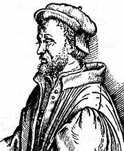
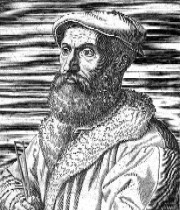

Considérons l'équation générale du troisième degré à coefficients complexes. aZ3+bZ2+cZ+d=0 (a ≠ 0) En divisant tout par a on peut supposer que a=1, et que l'équation est: Z3+bZ2+cZ+d=0 soit Z3+3(b/3)Z2+cZ+d=0 Soit encore (Z+b/3)3-3(b²/9)Z-b3/27+cZ+d=0 (Z+b/3)3+Z(c-3(b²/9))+d=0 (Z+b/3)3+(Z+b/3-b/3)(c-3(b²/9))+d=0 En posant Z' = Z+b/3 et en développant on arrive à : Z'3+pZ'+q = 0 où on pourra calculer les coefficient p et q en fonction de b,c et d.
En définitive, après quelques transformations simples, toute équation complexe du troisième degré peut se ramener à la forme 'canonique': Z3+pZ+q=0 où les coefficients p et q sont des nombres complexes. On peut supposer en outre que p ≠ 0 car sinon la résolution est évidente.
L'algorithme
La 'méthode de Cardan' repose sur l'astuce suivante: On pose Z=u+v transformant ainsi l'unique inconnue de l'équation en deux inconnues mais avec un degré de liberté (si (u,v) est une solution (u+k,v-k) en est une autre) . Réécrivons l'équation: (u+v)3+p(u+v)+q=0 u3+v3+3u2v+3uv2+p(u+v)+q=0 u3+v3+(u+v)(3uv+p)+q=0 Supposons maintenant que u et v soient choisis de telle sorte que 3uv+p=0 l'équation se transforme en le système: u3+v3=-q uv=-p/3 Soit en posant U=u3 et V= v3 U+V=-q UV=-p3/27 Tout revient à trouver deux nombres connaissant leur somme et leur produit, mais cela revient à résoudre une équation du second degré: W2+qW-p3/27=0 Nous avons donc ramené le problème de la résolution d'une équation du troisième degré à celui de la résolution d'une équation de degré strictement inférieur. Ayant U= u3 il est facile d'extraire de U les trois racines cubiques complexes : [ρ, θ]3 =[r,t] ⇔ ρ = r1/3 et θ = t/3+ 2kπ/3 , k ∈ ℤ et pour chaque valeur de u trouvée calculer la valeur de v correspondante -p/3u. Voir les exercices corrigés pour des résolutions pratiques. Le cas particulier où les coefficients p,q sont en fait tous deux réels sera également traité en exercice.
Galerie des portraits
Le troisième degré : un vrai 'polar' de la renaissance italienne avec pour acteurs principaux Niccolo Tartaglia, Jerôme Cardan, Scipione del Ferro
Canonical form
Consider the general equation of the third degree with complex coefficients. aZ3+bZ2+cZ+d=0 (a ≠ 0) By dividing everything by a we can assume that a=1, and the equation is: Z3+bZ2+cZ+d=0 that is Z3+3(b/3)Z2+cZ+d=0 Let (Z+b/3)3-3(b²/9)Zb3/27+cZ+d=0 (Z+b/3)3+Z(c-3(b²/9))+d=0 (Z+b/3)3+(Z+b/3-b/3)(c-3(b²/9))+d=0 By setting Z' = Z+b/3 and expanding we arrive at: Z'3+pZ'+q = 0 where we can calculate the coefficient p and q as a function of b,c and d.
Finally, after a few simple transformations, any third degree complex algebraic equation can be reduced to the 'canonical' form: Z3+pZ+q=0 where the coefficients p and q are complex numbers. One can further assume that p ≠ 0 because otherwise the resolution is obvious .
The algorithm
The 'Cardan method' relies on the following trick: We set Z=u+v thus transforming the unique unknown of the equation into two unknowns but with one degree of freedom (if (u,v) is a solution (u+k,v-k) is another). Let's rewrite the equation: (u+v)3+p(u+v)+q=0 u3+ v3+ 3u2v + 3uv2+ p (u + v) + q = 0 u3+ v3+ (u + v) (3uv + p) + q = 0 Now suppose that u and v are chosen such that 3uv+p=0 the equation turns into the system: u3+ v3= -q uv=-p/3 Or by setting U=u3 and V=v3 U+V=-q UV=-p3/27 It all boils down to finding two numbers knowing their sum and their product, but this amounts to solving a quadratic equation: W2+qW-p3/27=0 We have therefore reduced the problem of solving an equation of the third degree to that of solving a degree equation strictly lower. Having U= u3 it is easy to extract from U the three complex cubic roots: [ρ, θ]3 =[r,t] ⇔ ρ = r1/3 and θ = t/3+2kπ/3 , k ∈ ℤ and for each value of u found calculate the corresponding value of v-p/3u. See the corrected exercises for practical resolutions. The particular case where the coefficients p,q are in fact both real will also be treated as an exercise.
Portrait gallery
The third degree : a true 'thriller' of the Italian renaissance with Niccolo Tartaglia, Jerôme Cardan, Scipione del Ferro starring
Cardan (1501/1576-IT)
Tartaglia (1499/1557-IT)


Le coin de Python
Voici un programme qui résout les équations du troisième degré à coefficients complexes, en utilisant la méthode de Cardan:
Le coin de Julia
Même chose avec julia 1.6 :
Avec une bibliothèque, inutile de réinventer la roue :
Python's corner
Here is a program that solves third degree equations with complex coefficients, using Cardan's method:
Note to English speaking readers : The above program rests on
Only three functions have been added 'racines', 'Cardan' ans 'Resolution'. This is why French comments have been translated only for these three. Anyone who wants to have English comments for the rest should check the original program (see link above). Thank you !
Julia's corner
Same thing with julia 1.6:
With a library, there is no need to reinvent the wheel:
Same note is valid for Julia version. Please eventually refer to for English comments.